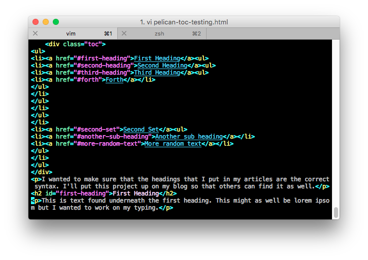
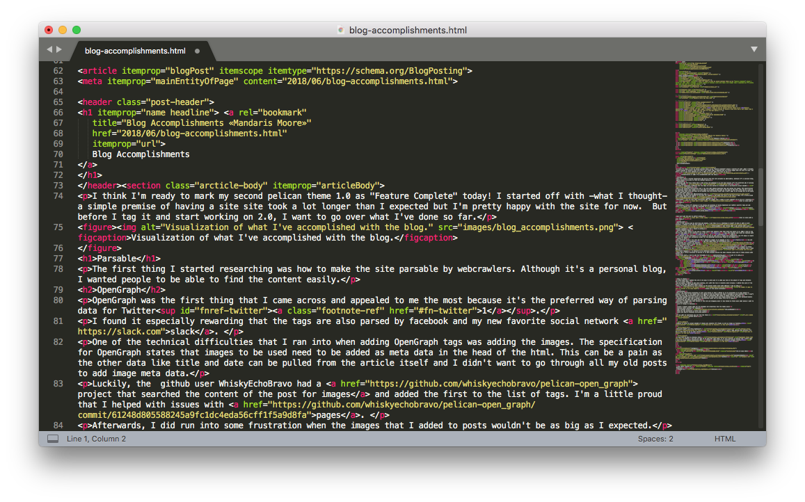
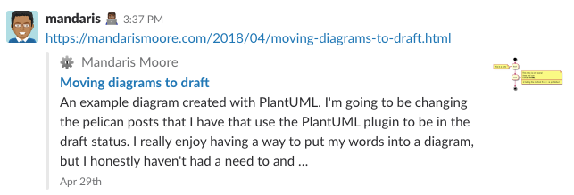
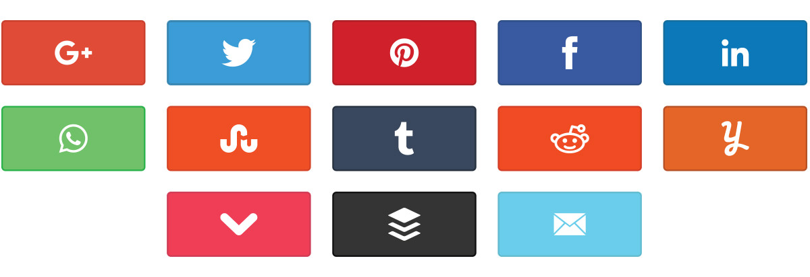
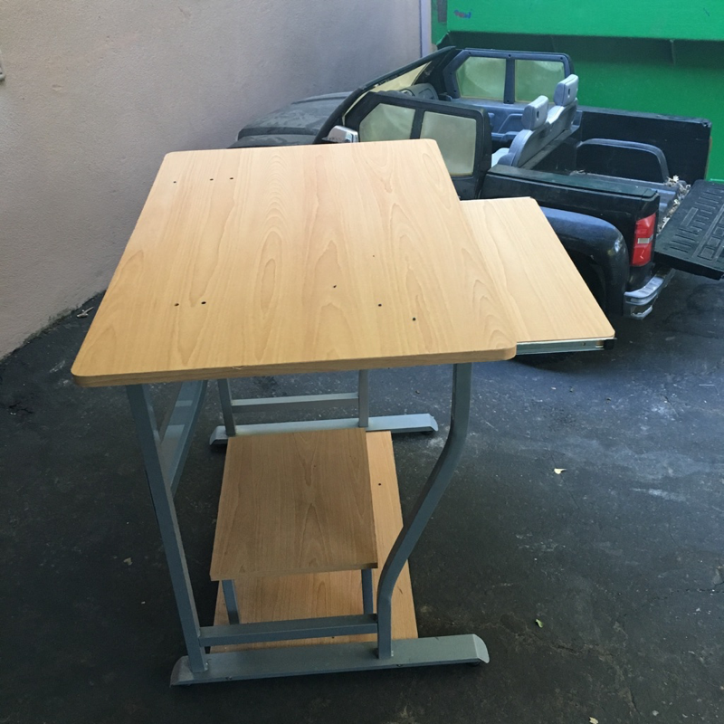

Well, I purchased the update for ScreeFlow 8 based off of my fear of missing out on new features and the dream that I'll one day make something with it.
I'm trying to change my habits with my computer and thought that I would focus on making things instead.
So, here is the first video that I've made in a very long time. I hope that they get better with practice.
I woke up from a dream this morning feeling conflicted and sad. The dream was about being offered a job working at Apple making tutorial videos and applications for others. It was my dream job and -although I had doubts about my ability- I wanted to pursue it.
The drawback is that I'd have to leave my relatively secure position working for the state. I spent the rest of the dream worrying about how I should approach the subject and cleaning up my local neighborhood.
Thinking about what my next actions are going to be.
I'm about to do a review of what needs to be done this week and I'm hesitant to start. Although I've been getting better at making sure that things get done, the sheer amount of "stuff" can feel overwhelming if I look at all of it at once.
I think that is why I find myself drawn to OmniFocus and GTD in general. It give me a tool that allows me to trust that what I'm not doing is correct.
But back to the matter at hand, what should my next project be?
Moving the site generation to another server
Currently, I have a iMac at home that generates the site and then scp the files to a server. The only times that I have had an issue is when I had to shut down dropbox running on the machine because it was being a resource hog.
My plan is to move all of my posts to a repository and then having a cron job running on the server to do an update every hour to update the repository and then the website.
Previously, I had written about how I found a solution to my compulsion to make sure that the headers on my blog were on the write2 level here.
As with so many other things in life, there was an easier1 solution that was built into python-markdown.
When I had first explored this issue, I had looked at the HeaderID it was marked as being deprecated and to be used for adding anchors for headings. I didn't read the whole thing because it didn't seem it would fit my needs. I continued on and found my current solution.
But, the thought that there could be a better way kept on nagging me even though I was happy3 with how my site turned out.
The first thing that I found was that the extension allows me to set the base for headers fairly easily by setting a property in my pelicanconfig.py.
# Markdown optionsMARKDOWN={'extension_configs':{'markdown.extensions.codehilite':{'css_class':'highlight'},'markdown.extensions.extra':{},'markdown.extensions.meta':{},'markdown.extensions.toc':{'baselevel':'3','title':'Table of Contents'},},'output_format':'html5',}
This eliminates the need for the additional plugin and as an added bonus allows me to have a table of contents for those really long posts that I never write.
Table of Pain

There are only a couple mild things that I don't really enjoy about this new solution.
Div-ided we stand on syntax
I'd love if this wasn't in a div and used either a nav or aside tag for accessibility and my own personal comfort.
Also, the number of li and ul tags can be hard to read if you want to read the raw html.
Titles for table of contents is in a span tag. I find that kind of ironic.
Seriously, just nitpicky at this point.
Making it look nice
This part is just me going back to trying to figure out how to make it look nice in the browser. I imagine that it won't take long, but there are going to be a couple of ugly iterations.
Easier being defined as having less dependencies. ↩
I'm in the bedroom upstairs. It's kind of like an office because it has a desk and no one to bother me at the moment. It gives me a second to think about what I'm going to do next in life.
I usually take some time to go through my list of projects in OmniFocus or read through my emails. Throughout the years, I find myself using the default mail client that comes with macOS.
I think that it is because the first time that I really enjoyed working with email was in college which is when I started using macOS.
Of course, I have a couple posts about how I used web clients but I find that I use my laptop when I really want to clean up what's in my inbox.
I've been part of a slack group where I contribute on a regular basis and some of the members have really gone the extra mile to share some of their experiences with the rest of us.
It feels amazing to be part of a group that is brave enough to do this and trusts us to that degree.
I'm feeling pretty inspired to write more as well.
Moving forward has gotten easier and easier to do. I'm definitely on an upswing when it comes to most of my goals for the last couple of months.
What am I attributing this new to this success?
More regular reviews via OmniFocus and a desire to accomplish what I set out to do.
A brief look at what I'm supposed to be doing today.
For the longest time, I would have OmniFocus on my laptop and and iPhone and just wish that it would organize my life - that everything would just fall into place by some kind of magic. I think this is why productivity software will always be in demand. People want things to happen, but they forget that it's just a tool and if you don't change who you are or your approach to the problem nothing is going to happen.
Reflecting in what needs to change
I realized that I had a problem. I was doing the constant yo-yo of getting organized moving my life forward for a couple weeks and then finding myself overwhelmed again. I feel that it's because I couldn't trust that everything in OmniFocus was something that I should be working on. I would have 20 plus items available for one day and those items would be individual actions or projects.
I would procrastinate and think 'I'll just do this later' because the deadlines and defer dates where just useless pieces of data. Later I would kick myself because I spent hours surfing the internet instead of marking something off.
I needed to become more aware of what I was doing.
Time Budgeting at home
Just like in financial budgeting, I needed to have more of an idea of where my time was going. I started using the app Timing to see how much time I spent goofing off versus actively using my computer1.
A look at computer usage on my laptop for last week.
Some of this, I already wrote about in a previous post, but I wanted to re-iterate how this is a continued reminder of how I keep myself on task.
There was a couple pitfalls with the process as my computing life is divided between a MacBook Pro and an iMac, but I'm hoping to clear some of that up with the new timing sync feature that was introduced.
New Screentime for iOS
Screentime on iOS allows me to be mindful on the phone.
With the new version of iOS, I’m able to get a better idea of what I’m using my phone for on a daily and weekly basis.
Currently, I’m not using the App limits because I’m hoping that being aware of how I use my phone will prompt me to change my habits and increase my will power.
Show a light day of usage via ScreenTime
It’s definitely a great start to quantifying what areas I want to work on. There is still one more tool.
Streaks
Streaks is an App on iOS that I picked up one day shortly after New Year’s Day. I’ve been using it off and on for making sure that I mediate3 and write in my journal.
It wasn’t until recently that I made reviewing my projects a priority to review in Streaks and I feel that it has really made a difference2. I get two kinds of positive reinforcements when I do this. The first, the fact that I get to mark it off. The second, I get to see evidence of my changing habit as a number.
End result
I feel better about myself as a responsible adult. There is true freedom in knowing what you are and are not doing.
I understand that this is a just a process for me and there is a possibility of me back sliding into bad habits. That is ok, because I know that getting back in the good habits is easier than ever before.
What's the point of spend so much money on something that I only watch videos on? ↩
Due is another good app for things like this. I use it for reminders to flex my core muscles throughout the day. ↩
In my last post, I left off with a list of things that I wanted to work on for the next release of the design of the blog. I'm still changing the header at the top of the page and I've been working on improving the contrast of the colors you see for links to make it easier to read. Something you can't spot just by looking is the fact that <h1> - <h3> tags don't correspond to the breakdown of the syntax of the rest of the site.
A small sample of the code that was being generated.
What do I see on the internet
I feel that a lot of the sites that are on the internet only use the <h1>, <h2>, <h3> tags and looking at some of the templates that I've come across for pelican use css classes to differentiate them in the design.
I don't have a problem with that, but I felt that it doesn't help those that might be using some kind of screen reader or parsing system1.
Searching for a solution
Once again, I started looking for a place where this had already been fixed and quickly found one that would make sure that the html that python-markdown would give me would match what I was expecting to give to my template.
Christian Prieto had already come up with this handy solution in 2016 and had put some tests and an example of how to incorporate it into pelican.
But there are further complications
Unfortunately, pelican has changed since the original and I wasn't able to get the solution to work. The readme says to add the following:
MD_EXTENSIONS=['downheader']
But the latest documentation found here, have the markdown default to be defined as a dictionary and not an array2. The simplest way to get it to work is to change your pelicanconfig.py to have the following code.
I've since made a pull request so that others can get around this as well.
Conclusion
I'm happier and happier with the way that the site is coming together, but I'm afraid of the amount of technical debt that the site is accruing as I go along. I've to to make the readme a priority for those who come after me and want to make this design better.
I've also taken some time to just take the header and just make a standalone project that demonstrates how it works. I points to the simple theme that comes with pelican so people can just download it after installing pelican, python-markdown and the mdx_downheader package.
From what I've seen a lot of webcrawlers use the headers of a page to determine whether a site was worth putting in search results. ↩
This isn't the only place that has this, but I've been having trouble just getting the projects that I am using up to date. Heck, my readme is one line at this point! ↩
I think I'm ready to mark my second pelican theme 1.0 as "Feature Complete" today! I started off with -what I thought- a simple premise of having a site site took a lot longer than I expected but I'm pretty happy with the site for now. But before I tag it and start working on 2.0, I want to go over what I've done so far.
Visualization of what I've accomplished with the blog.
Parsable
The first thing I started researching was how to make the site parsable by webcrawlers. Although it's a personal blog, I wanted people to be able to find the content easily.
OpenGraph
OpenGraph was the first thing that I came across and appealed to me the most because it's the preferred way of parsing data for Twitter1.
I found it especially rewarding that the tags are also parsed by facebook and my new favorite social network slack.
One of the technical difficulties that I ran into when adding OpenGraph tags was adding the images. The specification for OpenGraph states that images to be used need to be added as meta data in the head of the html. This can be a pain as the other data like title and date can be pulled from the article itself and I didn't want to go through all my old posts to add image meta data.
Afterwards, I did run into some frustration when the images that I added to posts wouldn't be as big as I expected.
Post in slack with a small image.
Ultimately, I think it's because of the mixing and matching of having OpenGraph and twitter specific tags and was solved it by making sure I used the following for my twitter card.
This is the styling used by both Bing and Google. I put this in as a challenge to myself to make it work in both instances. I leaned a lot from the example on OrbitingWeb and refined what I was working with using another example that I found on github.
Valid Semantic Tags
For this, I just wanted to use some of those really cool semantic tags that html5 has given to us. When I look at the code for some pages on the internet I see a lot of <div> tags with classes that could be replaced with <main>, <nav>, or <section> tags.
I'm willing to just attribute it to my desire to have my own style or maybe just inexperience, but I'm happy to report that the site passes html validation except for the OpenGraph definitions found in the header.
figure it out
One technical hurdle I ran into was that I wanted my images to be wrapped in the <figure> tag and also have a <figcaption> tag that would have the alternative text.
I searched for a plugin for pelican2, but the closest thing I could find was liquid tags at the time3.
I did find jdittrich figureAltCaption project on github which was a extension for the python-markdown that pelican uses. I even submitted a pull request to allow it to do reference links!
There was a little confusion on getting it to work because pelican has been changing since some of these plugins were created.
Long story short, I had to add the following to my pelicanconfig.py to get it to work.
I wrote down that I wanted the site to be easy to share and it is when you look at the amount of tags and metadata that is in every page.
At one point, I wanted to add share buttons, but -with the rise in concerns about privacy- I wanted the users of the site to be the ones who would share it.
Also, I'm still working on color schemes so the buttons might clash with whatever I end up with.
Clash of the social buttons!
Accessible
One of the underlining principles of this site design is that I wanted it to be accessible to as many people as possible. It's part of the reason that I've worked so hard on making sure that I included so many semantic tags. I didn't think that this was particularly hard to do when you understand what needs to happen before you begin.
The theme doesn't have any errors at this point, but does loose some points because of the way that markdown headers are handled and the fact that I picked a low contrast color for my links. I'll fix it soon.
Conclusion and where I'm going next
Overall, I'm happy with this version of the site and blogging about it has helped me think about what places I want to refine going forward.
List of things to improve
Create a decent readme with all the packages and properties that the theme uses
If you want to contribute you can find the theme on github here.
Twitter is still my social network of choice and -despite it's flaws- is not as creepy as facebook. ↩
Seriously didn't see Chris MacMackin's figure-ref until I was writing this article. I'll have to look into it for my next version. ↩
I used this to make my previous theme Tufte and did not want to go down that road twice. It is very specific to pelican and I didn't want to dive into more regular expressions when I knew there had to be a solution already created. ↩
I found a desk near the garbage bin and I wanted even though I didn't have room for it. I guess it's because I still love the idea of sitting down and getting to work on something.
A lone desk looking for a good home.
I feel that it’s party because of the restlessness I get every once in a while where I want to make or learn something. I think I’m really making progress in keeping my eye on the ball and making sure to reflect on my goals.
Meanwhile...
Work has been really busy and weird at the same time. A lot of unanswered questions and unease just below the surface. I hope there isn’t any extra drama...